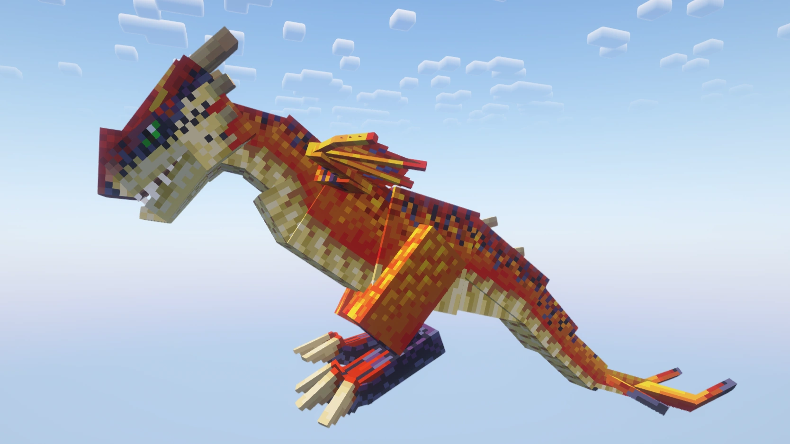
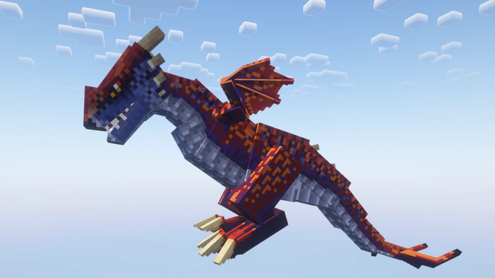
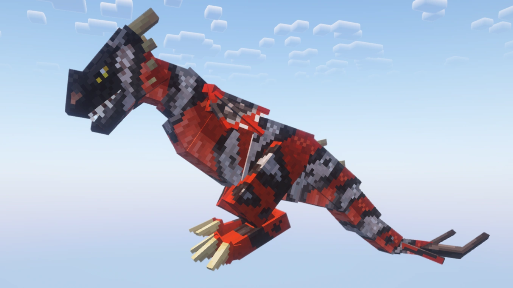
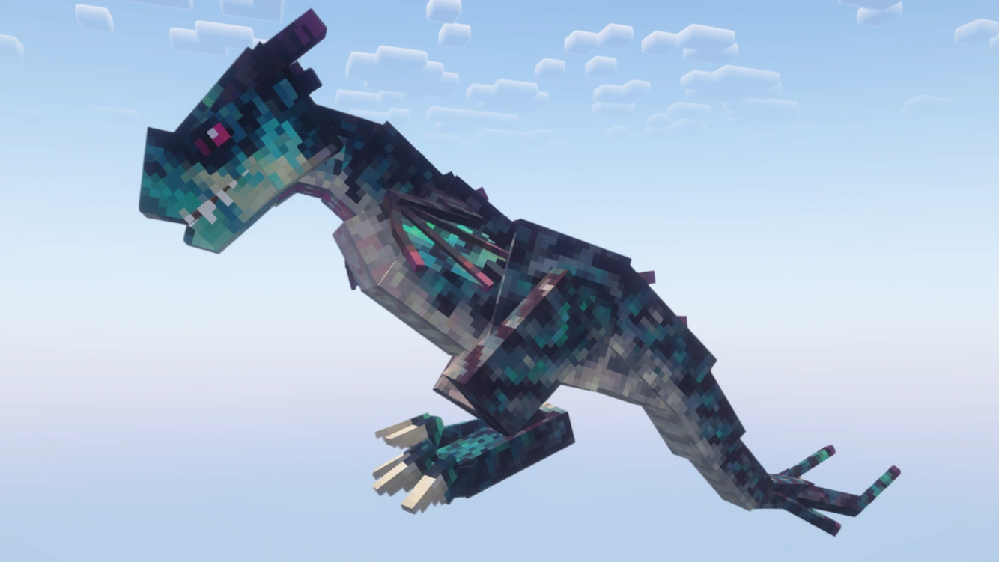
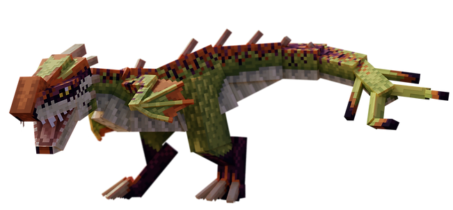

Stinger
le venimeux des plainesDescription
§ 1Petit dragon de plaine, ami des bétails. Vitesse au sol 0.55 — la plus rapide du codex.
Sa charge en Ram en fait un bélier vivant. Apprivoisé, il porte un collier de chaînes — utilitaire avant tout, pas un dragon de combat aérien (pas de vol). Six variantes connues, l'une (« Coastal Predator ») ne spawne que sur la côte.
Capacités
§ 2Ram — Charge à plein régime
Charge frontale à pleine vitesse. Hitbox stingerRamOffset n'est active que durant l'animation de charge (S34 fix : avant, elle restait active hors charge).
Apprivoisement
§ 3Tier II — La main tendue.
Nourriture : Mouton.
Conditions : Aucune armure ni arme équipée.
- Trouve un Stinger en plaine ou savane.
- Retire armure et arme.
- Tiens du mouton et clic droit, encore.
- Au seuil, 1 chance sur 7 par interaction.
Reproduction
§ 4Habitat (2 groupes)
§ 5
A. Sunflower Plains, Savannas, Savanna Plateaus.
B. Badlands, Wooded Badlands, Eroded Badlands.
Variantes (6)
§ 6
Variant 1
Mudsmasher
Tons boueux

Variant 2
Sandscorcher
Brûlant des sables

Variant 3
Badlands
Tons de mesa rouge

Variant 4
Kingly
Tons royaux

Variant 5
Coastal Predator
Côte uniquement — biome Beach / Stony Shore

Défaut
Wildroar
Forme par défaut — case 0
Trivia
§ 7- Vitesse au sol 0.55 — la plus rapide du codex (devant les autres dragons à 0.4).
- Pas de capacité de vol — au sol uniquement.
- Apprivoisé, il porte un collier de chaînes décoratif.
- Variante Coastal Predator : ne spawne que sur la côte (biomes Beach / Stony Shore).
- Hitbox de charge fixée en S34 : active uniquement durant l'animation Ram.
Commande /summon
§ 8/summon isleofberk:stinger ~ ~ ~ {variant:1}
Variantes 1 à 5. Wildroar (variant 0) : forme par défaut.